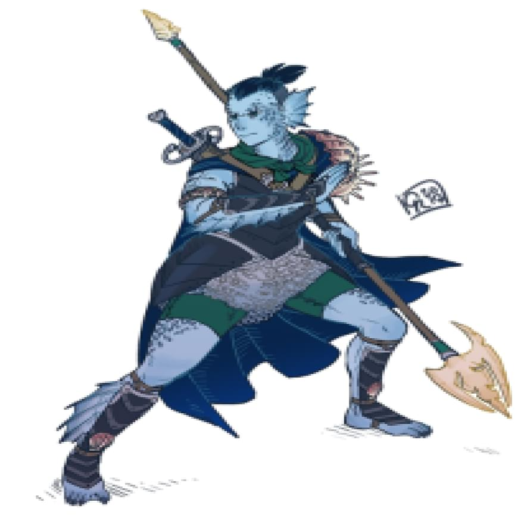

Имя: Сайд

Характеристики:
Сила +5
Ловкость +1
Телосложение +4
Интеллект +2
Мудрость 0
Харизма 0
Акробатика -1
Ателетика +5
Внимательность 0
Выживыние +5
Выступление +1
Запугивание 0
История +2
Ловкость рук 0
Магия +3
Медицина +2
Обман +1
Природа +3
Проницательность 0
Религия +2
Скрытность -1
Убеждение 0
Уход за животными +3
Анализ 0
Характер:
- Честность: Ваш персонаж всегда говорит правду и держит свои обещания, стремясь к справедливости и надежности во всех отношениях.
- Нейтралитет : Ваш персонаж старается сохранять нейтралитет и объективность в конфликтах, стремясь найти компромисс и справедливое решение.
- Нетерпимость: Иногда вы проявляете нетерпимость к идеям или поведению, которые не соответствуют вашим убеждениям, что может приводить к напряженным отношениям с окружающими
Тритон - Ретарий
Тритоны немного ниже чем люди, в среднем около 5 футов (1,5 метра) в высоту. Ваш размер — Средний.
В древности, в мрачные времена давно позабытых лет, тритоны возникли как древняя и благородная раса. С могучими плавниками и изящными телами, они стали хранителями океанских глубин, обладателями мудрости и силы.
Веками тритоны вели жестокую войну с гигантами, колоссальными тварями, чьи громадные тела отражали величие и силу морского царства. Гиганты использовали огромные якоря из затонувших кораблей как оружие, превращая их в смертоносное бедствие. Они охотились на китов, утоляя свою жажду крови и ради пропитания.
Искалеченные войной и истощенные потерями, тритоны осознали, что продолжение кровопролитной схватки ведет лишь к безмерной разрушительной силе. В их сердцах родилась жажда мира и согласия.
Оказавшись мастерами дипломатии и торговли, тритоны предложили гигантам новую перспективу. Они принесли им свое сокровище - черный жемчуг, драгоценность, извлекаемую из глубин океана. Этот таинственный камень стал символом доверия и сотрудничества, подарком, который призывал гигантов к новому началу.
Гиганты, пораженные благородством и щедростью тритонов, приняли это предложение. Они осознали, что их голод и жажда власти несут лишь разрушение и страдание, тогда как сотрудничество и дружба могут принести истинное благополучие. Гиганты стали верными союзниками и непоколебимой защитой тритонов.
История тритонов стала вдохновением для всех мировых сообществ, напоминая о том, что даже самые страшные враги могут найти мир и примирение, а сила дружбы и сотрудничества способна преодолеть любые преграды, превращая вражду в надежду и сплочение.
Признанные защитники океанских глубин, в последние годы благородные тритоны стали все более и более активными в мире на поверхности.
Моя личная цель:
Инвентарь:
Способности:
Как рыба в воде
Вы способны дышать под водой и искусно плаваете
Водное копье
Вы способны наполнить свое копье силой воды при броске и оно нанесет удвоенный урон
Водяная стена
Вы способны создать стену или кольцо воды, которое считается труднопроходимой местностью и дальнобойные атаки будут совершаться с помехой. Стена существует пока действует заклинание, во время чего вы не способны совершать какие либо действия.
Оседлать волну
Во создаете волну воды, которая сбивает с ног противников (противник кидает спасбросок, нельзя сбить гигантов) и оставляет за собой водную гладь, по которой вы имеете ускоренное перемещение и способность скрыться
Тройной удар
После создания водной глади вы способны атаковать на следующем ходу троих противников одновременно
Легендарная способность - Гнев Бури
Персонаж способен вызывать мощные штормы и водные смерчи. Он может создавать огромные водяные волны, обрушивать их на врагов, вызывать ливни и грозы. Эта способность позволяет персонажу контролировать погоду и наносить разрушительные удары водными силами. Наносит урон всем персонажам в большом радиусе - 3к12
Инициатива
0
Кость хитов
2к8
Экипировка:
Оружие (сети, копья):
Заостренный Трезубец тритона
Трезубец можно использовать как метательное или колющее оружие. Имеет привязанную сетку в нижней части 3 (1к8) меткость +2
Доспехи (легкие):
Чешуйчатые ботинки Тритонов
+1 к защите
Чешуйчатый доспех Тритонов
+1 к защите
чешуйчатые браслеты Тритонов
+1 к защите
Жизни:
19
Класс брони:
13
Языки:
Общий, Тритонский
Имя: Дима

Характеристики:
Сила -1
Ловкость +3
Телосложение -1
Интеллект 0
Мудрость 0
Харизма +1
Акробатика +2
Ателетика -2
Внимательность 0
Выживыние -1
Выступление +1
Запугивание +1
История 0
Ловкость рук +2
Магия 0
Медицина 0
Обман +1
Природа 0
Проницательность 0
Религия 0
Скрытность +1
Убеждение +1
Уход за животными 0
Анализ 0
Характер:
- Ваш персонаж обладает проницательным умом, что позволяет ему быстро анализировать ситуации и находить выход из сложных ситуаций.
- Вы склонны к самоуверенности и иногда проявляете некоторую высокомерность, что может вызывать неприязнь у некоторых людей.
- Ваш персонаж обладает яркими и чуткими чувствами, позволяющими ему наслаждаться малыми радостями жизни и проникаться красотой окружающего мира.
- Вы проявляете склонность к независимости и свободолюбию, предпочитая самостоятельно принимать решения и не привязываться к кому-либо или чему-либо.
- Ваш персонаж обладает уникальным чувством юмора, способен поднимать настроение окружающим и находить радость в жизни даже в трудных моментах.
Каджит - убийца
На землях Эльсвейра, там, где пески теряются в далеких горизонтах и мистический ветер веет с запада, процветает древняя раса каджитов. Котоподобные существа, выдающиеся своим грациозным обликом и изысканным характером.
Изначально народ каджитов жил в маленьких племенах, странствуя по пустынным равнинам и древним руинам, прислушиваясь к зову своих предков. Они обладали искусством торговли и мастерством военного искусства, что делало их ценными союзниками и опасными противниками.
Однако, их история неразрывно связана с вековыми конфликтами и интригами, которые грозили разделить их на отдельные фракции. Битвы за власть и территорию грозили разрушить славу и силу каджитов. Но в самый темный период их истории, каджиты объединились под влиянием харизматичного лидера и обрели новую надежду.
Под руководством нового правителя, который прославился своим мудрым правлением и умением примирять враждующие стороны, Эльсвейр процветал. Каджиты создали богатую культуру искусства, музыки и торговли, привлекая к себе внимание окружающих земель.
Однако, тени прошлого не исчезли полностью. Враждебные силы всегда таились в тени, готовые попытаться разрушить мир и поругать славу каджитов. Но народ Эльсвейра никогда не забывал своих корней и оставался единим в сердце, готовым защитить свою родину.
Так продолжается их история - история гордых и грациозных каджитов, которые продолжают покорять мир своими талантами, торговлей и мудростью. Эльсвейр - земля, где магия и древние тайны соединяются с мастерством и обаянием каджитов, создавая неповторимую легенду, живущую в сердцах и уме этого великого народа.
Однако недавно Каджитам выпало столкнуться с новым испытанием. Война была объявлена Корвусам, другой расе, с которой Каджиты ранее поддерживали мирные отношения. Это вызвало раздор и борьбу между двумя расами, превращая их прежнюю дружбу в ожесточенное противостояние.
Моя личная цель:
Инвентарь:
Способности:
Стальные когти
Ваши руки превращаются в острые когти, позволяющие вам атаковать врагов смертельными и точными ударами ближнего боя.
Мастер ухода
Ваши навыки ловкости безупречны. Вы обладаете способностью быстро отступить от опасности и уклониться от предсмертной атаки противника, сохраняя свою жизнь.
Бросок метательного клинка
Вы виртуозно метаете кунаи, это позволяет вам атаковать врагов на расстоянии, используется вместо основной атаки. урон (1к6) +4 меткость
Выброс
Вы способны неожиданно выбросить кунай с близкого расстояния после совершения основной атаки. Урон (1к6) проверка на меткость не требуется. Нельзя использовать после того, как противники заметили “Выброс”.
Неожиданный пинок
После основной атаки из скрытности вы способны пнуть и отбросить врага стоящего рядом, нанеся урон (1к4)
Я - тень
Вы способны скрыться в тени союзного персонажа. Нельзя использовать во время боя
Слабое место (пассивная способность)
Вы игнорируете класс брони противника, вместо этого бросьте кубик д20, результат больший или равный 11 будет попаданием
Инициатива
+2
Кость хитов
1к8
Экипировка:
Оружие (Кинжалы, метательные топоры и ножи, одноручный топор, одноручный арбалет):
Кинжалы
Острые кинжалы (2к4) + 2
Меткость: +4
Доспехи (легкие):
Кожанный доспех
+1 к защите
Кожанный ботинки
+1 к защите
Кожанный браслеты
+1 к защите
Жизни:
15
Класс брони:
13
Языки:
Общий, Каджитский
Имя: Асхат

Характеристики:
Сила -1
Ловкость 0
Телосложение 0
Интеллект +3
Мудрость +1
Харизма -1
Акробатика -2
Ателетика -2
Внимательность +1
Выживыние 0
Выступление -1
Запугивание 0
История +1
Ловкость рук 0
Магия +2
Медицина +1
Обман -1
Природа +4
Проницательность +1
Религия +1
Скрытность 0
Убеждение -1
Уход за животными +2
Анализ +1
Характер:
- Самоконтроль: Вы обладаете способностью контролировать свои эмоции и держать себя на поводке. Это помогает Вам принимать рациональные решения даже в самых сложных ситуациях.
- Замкнутость: Вы предпочитаете сохранять свои мысли и эмоции в себе, не раскрывая их окружающим. Ваша молчаливость создает загадку вокруг Вас и заставляет других людей проявлять больше интереса к Вашей личности.
- Решительность: Когда Вы принимаете решение, Вы полностью его осуществляете. Ничто не может отвлечь Вас от цели, и Вы готовы пойти на любые жертвы, чтобы достичь успеха.
Корвус - маг роста
В глубинах горных вершин и мрачных лесов, между туманными долинами, пробудилась раса Корвусов. Большинство из них обладало остроумием и высокоразвитым интеллектом, делая их настоящими стратегами и мастерами мудрости.
Однако их дары не ограничивались только умом. Корвусы отличались великолепным пониманием и владением магией. Они воплощали в себе энергию источников, способные вызывать мощные заклинания и манипулировать элементами природы.
Слава Корвусов распространилась далеко за пределы их родной земли. Они были известны своим мастерством в добыче золота. Их острый глаз и тонкая чуткость помогали им обнаруживать самые малейшие следы драгоценного металла, который они с умением извлекали из недр земли.
Однако недавно Корвусам выпало столкнуться с новым испытанием. Война была объявлена каджитам, другой расе, с которой Корвусы ранее поддерживали мирные отношения. Это вызвало раздор и борьбу между двумя расами, превращая их прежнюю дружбу в ожесточенное противостояние.
Теперь Корвусам предстоит использовать свой ум, магические способности и навыки добычи золота, чтобы защитить свою расу и выстоять в этой новой суровой реальности. Что ждет их в этом конфликте и как они справятся с ним – только время покажет.
Моя личная цель:
Инвентарь:
Способности:
Очки природы
Вы способны накапливать до трех очков роста и использовать за их счет способности
Старое должно умереть, чтобы новое смогло возрости
После смерти живого существа, вы способны восполнить одно очко роста потратив ход, спустя один ход действие выполнить будет невозможно, по окончанию битвы в случае присуствия трупов живых персонажей с жизненной энергией, вы восолняете одно очко, максимальное колличество очков роста - 3
Исцеляющий прикосновение
Потратив очко роста, вы способны излечить существо на 1к6
Поглощение жизни
Вы способны мгновенно убить маленькое существо
Опутывание
Вы способны опутать корнями противника, полностью обездвижив его на 1 ход, потратив одно очко роста
Форма ворона
Вы способны превратиться в ворона, потратив 1 очко роста
Ядовитая лоза
Потратив одно очко роста, вы способны опутать врага ядовитой лозой, в следствии чего он получит урон 2к6 и урон от отравления на 2 хода 2
Землетрясение
Потратив 3 очка роста, вы способны создать землетрясение в небольшом радиусе, в следвии чего все персонажи находящиеся в данной области получат урон 3к6
Инициатива
0
Кость хитов
1к8
Экипировка:
Оружие (посохи, волшебные палочки):
Посох роста
Посох роста (1к4) + 1
Меткость: +3
Доспехи (тканные доспехи):
Набедренная повязка
+1 к защите
сандали
+1 к защите
Жизни:
12
Класс брони:
12
Языки:
Общий, Каджитский, Корвусовский